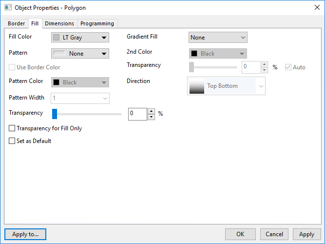
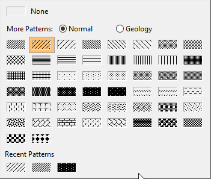
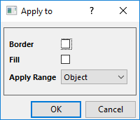

Die Registerkarte Füllung (Objekteigenschaften)
Ob-Prop-Fill-tab
Diese Registerkarte ist für die geschlossenen Diagrammobjekte, wie Rechtecke, Kreise und Polygone, verfügbar, um die Füllfarbe und das Füllmuster benutzerdefiniert anzupassen.
- 
Füllung
Füllfarbe
Legen Sie eine Füllfarbe fest. Wählen Sie Kein aus, um eine transparente Füllung anzuzeigen. Per Standard verwendet Origin Hellgrau als die Füllfarbe.
Gradientenfüllung
Legt den Modus der Gradientenfüllung fest.
- Keine: Keine Gradientenfarbänderung
- Eine Farbe: Eine Farbe verwandelt sich allmählich von schwarz in weiß.
- Zwei Farben: Die Füllung verwandelt sich allmählich von einer Farbe in eine andere.
Helligkeit
Diese Option ist nur verfügbar, wenn die Gradientenfüllung auf eine Eine Farbe gesetzt ist. Die Helligkeit (in %) der Gradientenfüllfarbe wird hier mit einem Schiebeelement eingestellt und variiert zwischen schwarz und weiß.
2. Farbe
Diese Option ist nur verfügbar, wenn die Gradientenfüllung auf Zwei Farben gesetzt ist. Wählen Sie die zweite Farbe, die zum Erstellen des Gradienten verwendet werden soll.
Transparenz
Diese Option ist nur verfügbar, wenn die Gradientenfüllung auf Zwei Farben gesetzt ist. Per Standard teilen die Füllfarbe und das Füllmuster den gleichen Transparenzwert über das untenstehende Bedienelement Transparenz. Beim Deaktivieren von Auto setzen Sie die Transparenz für die Gradientenfüllung separat.
Richtung
Diese Option ist verfügbar, wenn Gradientenfüllung auf Eine Farbe oder Zwei Farben festgelegt ist. Mit ihr können Sie die Richtung festlegen, in der sich die Füllfarbe allmählich verändert.
Muster
Muster
Legen Sie fest, wie das Muster mit Hilfe der Musterauswahl gefüllt wird, ähnlich der Funktionsweise der Farbauswahl.
- 
_Fill_tab/Tip_icon.png) |
Sie können Ihre eigenen benutzerdefinierten Füllmuster zur Mustergalerie hinzufügen (Hinweis: Sie werden am Ende der Liste hinzugefügt). Öffnen Sie Ihren Anwenderdateiordner (UFF) und erstellen Sie einen Ordner /Muster. Erstellen Sie dann die Unterordner /Geologie und /Normal. Speichern Sie eine EMF-Datei von Ihrem benutzerdefinierten Muster in dem entsprechenden Unterordner (z. B. /Muster/Geologie). Ihr benutzerdefiniertes Muster wird nun in der Galerie angezeigt.
|
Musterfarbe
Wenn ein Muster in der Liste Muster ausgewählt wird, ist die Schaltfläche Musterfarbe verfügbar. klicken Sie auf diese Schaltfläche, um die Farbauswahl zu öffnen. Mit ihrer Hilfe können Farben für ausgewählte Muster festgelegt werden.
Musterbreite
Legt die Breite der Linien in dem Füllmuster fest. Die Linienbreite wird in Punktgröße gemessen, wobei 1 Punkt = 1/72 Zoll ist.
Transparenz
Wenden Sie die Transparenz der Füllung an. Bewegen Sie den Schieber oder geben Sie eine ganze Zahl von 0 (keine Transparenz) bis 100 (vollständige Transparenz) ein.
Transparenz nur für Füllung
Wenn Sie die obige Transparenz nur auf die Füllung an. Die Transparenz des Rahmens sollte 0 sein.
Als Standard setzen
Setzen Sie die Füllungseinstellungen für alle geschlossenen Diagrammobjekte als Standard. Beim nächsten Mal wenn Sie ein neues geschlossenes Objekt erstellen, werden die Einstellungen standardmäßig verwendet.
Anwenden auf

Klicken Sie auf die Schaltfläche Anwenden auf..., um die Rahmen- und Füllungseinstellungen auf andere Objekte im aktuellen Layer, in allen Layern oder allen Fenstern anzuwenden.
|
Hinweis 1: Das Bedienelement Transparenz ist das gleiche wie auf der Registerkarte Grenze. Sie enthalten beide den gleichen Wert.
Wenn Sie den Prozentsatz der Transparenz für die Füllung ändern, wird die Grenze auf den gleichen Prozentsatz für die Transparenz angewendet und umgekehrt.
Wenn Sie die Transparenz festlegen und das Kontrollkästchen Transparenz nur für Füllung aktiviert ist, wird die Transparenz nur auf die Füllung angewendet und die Transparenz des Rands wird auf 0 gesetzt.
|
Hinweis 2: Für Win98- und ME-Anwender: Beim Kopieren und Einfügen von einem Diagramm, das Zeichenobjekte enthält, kommt es vor, dass Füllmuster nicht in die Zielanwendung kopiert werden (z.B. MS Word). Sollte dies eintreten, können Sie das Problem vielleicht beheben, indem Sie Folgendes tun:
- Speichern und schließen Sie Ihre Origin-Projektdatei.
- Öffnen Sie das Skriptfenster und geben Sie Folgendes ein:
- @ce=1 <Enter>
- Öffnen Sie die Projektdatei erneut.
- Kopieren Sie es erneut und fügen Sie das Origin-Diagramm in die Zielanwendung ein.
Füllmuster sollten in der Zielanwendung korrekt wiedergegeben werden.
|